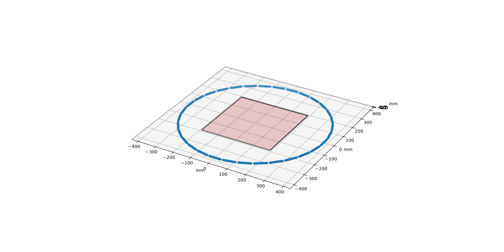
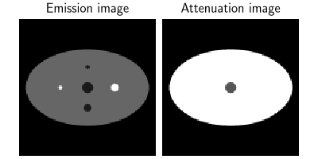
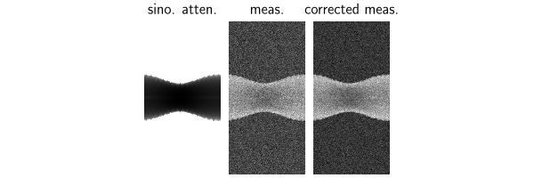
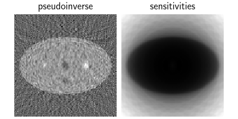
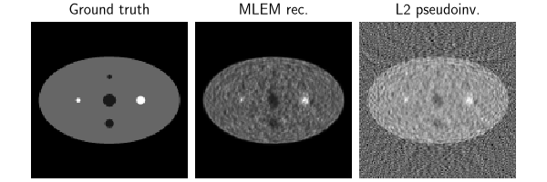

Note
New to DeepInverse? Get started with the basics with the 5 minute quickstart tutorial..
Positron emission tomography (PET) in 2D#
This demo shows how to define a non time-of-flight PET scanner, simulate measurements and reconstruct an image from them.
The PET forward model is defined as
where \(H \in \mathbb{R}_{+}^{m \times n}\) is the projection operator, \(g \in \mathbb{R}_{+}^{n}\) is a Gaussian blur kernel, \(x\in\mathbb{R}_{+}^{n}\) is the emission image, \(b \in \mathbb{R}_{+}^{m}\) is the (expected) background, \(\mathcal{P}\) denotes Poisson noise with gain \(\gamma > 0\), \(c=\exp(-H\mu)\in \mathbb{R}_{+}^{m}\) is an (optional) attenuation term with \(\mu \in \mathbb{R}_{+}^{n}\) an attenuation map (typically obtained through an auxiliary CT scan).
Note
This operator requires the parallelproj package to be installed.
This in turn requires installing deepinv via pixi or conda,
but not pypi/uv (as parallelproj is not currently available on pypi).
If you are working on a conda environment, you can install parallelproj as
conda install -c conda-forge parallelproj
If you are working on a pixi installation, simply do
pixi install -e full
which installs all optional dependencies.
Check the parallelproj documentation for more details: https://parallelproj.readthedocs.io/en/stable/.
import deepinv as dinv
from deepinv.physics import PET
from deepinv.utils.phantoms import generate_pet_phantom
import torch
import parallelproj
from array_api_compat import torch as torch_compat
Setup a minimal non-TOF PET projector#
Here we define each pixel to have size \(3\times 3\) mm such that the total area to reconstruct is of size \(38.4\times 38.4\) cm which fits approximately a slice of a human chest.
The maximum achievable resolution (in high count settings) is typically proportional to the full-width at half maximum (FWHM) of the Gaussian blur kernel, which here is set to 4 mm.
We use a PET scanner with a single ring of detectors, which is a polygon of 32 sides, with each side containing 16 detectors. This gives us a total of 32*16=512 detectors in total.
Tip
You can play with different geometries and voxel sizes to get a good grasp of
the scanner geometry, and visualize it with physics.plot_geometry()
Note
In this example, we normalize the forward operator \(\|A\|=1\) (normalize=True) and
the Poisson counts to be between 0 and 1 (normalize_counts=True), to simplify reconstruction.
If you want to use the operator with real PET measurements, you will need to
carefully handle the normalization. See also the unnormalized 3D PET example.
device = "cuda" if torch.cuda.is_available() else "cpu"
img_size = (128, 128)
voxel_size = (3, 3)
# number of sides of the polygon approximating a circle
num_sides = 32
# number of detectors per polygon side
num_lor_endpoints_per_side = 16
# choose a single ring for 2D
num_rings = 1
scanner = parallelproj.pet_scanners.DemoPETScannerGeometry(
torch_compat,
dev=device,
num_rings=num_rings,
num_sides=num_sides,
num_lor_endpoints_per_side=num_lor_endpoints_per_side,
)
# gain of the device:
# higher gains are associated to lower dose and/or shorter acquisition times,
# while lower gains are associated to higher dose and/or longer acquisition times.
# larger gain -> more poisson noise -> harder reconstruction
gain = 0.001
# FWHM of the Gaussian blur kernel in mm
fwhm_data_mm = 4
physics = PET(
device=device,
voxel_size=voxel_size,
fwhm_data_mm=fwhm_data_mm,
scanner=scanner,
img_size=img_size,
normalize_counts=True,
normalize=True,
gain=gain,
)
physics.plot_geometry()

Define a phantom and attenuation map#
We define a 2D phantom and attenuation map, whose shape is the same as the phantom.
In practice, the attenuation is typically obtained with an auxiliary CT scan of the patient.
x, attenuation = generate_pet_phantom(img_size, device=device)
dinv.utils.plot([x, attenuation], titles=["Emission image", "Attenuation image"])

Simulating measurements#
The shape of measurements is approximately (B, 1, N, N/2) where
N=num_lor_endpoints_per_side*num_sides is the number of detectors per ring.
This provides one measurement for every possible Line of Response (LOR), or in other words ‘rays’, connecting
two detectors in the scanner, which are arranged in a sinogram format, with the first axis
corresponding to the angle of the ray and the second axis corresponding to the distance of the ray to the center of the field of view.
Tip
The size of measurements is independent of the chosen img_size
Measurements shape=(1, 1, 507, 256), range=(0.00,0.66)
Setting up background and attenuation#
The attenuation term reduces the amount of signal measured in rays that go through highly attenuating regions, such as bones. This makes the reconstruction more challenging, but also more realistic.
In PET, we generally have access to a realization of the background, i.e., \(\tilde{s} \sim \mathcal{P}(s)\), which is a Poisson random variable with mean \(s\).
Both attenuation and background are stored as “physics parameters” which are patient dependent
and can be updated via physics.update(...) or by passing them as kwargs in
physics(x, ...), physics.A(x, ...) or
physics.A_adjoint(y, ...).
Note
The attenuation is stored in the physics in sinogram space as \(\exp(-\mu)\) to speed up computations,
but it can be provided either in image space, i.e., \(\mu\), to the physics, or in sinogram space, i.e., \(\exp(-\mu)\).
The class figures out the attenuation space by comparing it to img_size.
expected_background = torch.ones_like(y) * x.max() * 0.05
background = physics.generate_background(expected_background)
physics.update(attenuation=attenuation, background=background)
y = physics(x)
y2 = y - background
dinv.utils.plot(
[physics.attenuation, y, y2], ["sino. atten.", "meas.", "corrected meas."]
)

/local/jtachell/deepinv/deepinv/deepinv/physics/functional/matrix.py:42: UserWarning: Power iteration: convergence not reached
warnings.warn("Power iteration: convergence not reached")
Backprojection and sensitivities#
We backproject the data to visualize the sensitivity map of the scanner. The sensitivity map is defined as the back-projection of a sinogram of ones \(s = A^\top \mathbf{1}\), which corresponds to the number of rays intersecting each voxel.
Here we also obtain a simple linear least-squares reconstruction by using
A_dagger.
with torch.no_grad():
x_dag = physics.A_dagger(y - background)
sensitivities = physics.A_adjoint(torch.ones_like(y))
print(f"Norm operator: {physics.compute_norm(x):.2f}")
dinv.utils.plot([x_dag, sensitivities], ["pseudoinverse", "sensitivities"])

Power iteration converged at iteration 6, ||A^T A||_2=1.00
Norm operator: 1.00
MLEM reconstruction#
We run the standard MLEM reconstruction algorithm to obtain a reconstructed emission volume.
The algorithm can be seen as a preconditioned gradient descent on the negative log-likelihood of the Poisson model:
where \(f\) is the Poisson data-fidelity term, \(P=\mathrm{diag}(\frac{x}{A^T\mathbf{1}})\) is a preconditioner and \(b\) is the background.
We compare MLEM with the least-squares reconstruction.
gain = physics.noise_model.gain
data_fidelity = dinv.optim.PoissonLikelihood(
bkg=background / gain,
gain=gain,
denormalize=True,
)
stepsize = 1.0
x_mlem = torch.ones_like(x)
with torch.no_grad():
for i in range(100):
grad = data_fidelity.grad(x=x_mlem, y=y, physics=physics) / gain
preconditioner = (x_mlem + 1e-9) / (sensitivities + 1e-9)
x_mlem = x_mlem - preconditioner * grad
x_mlem = torch.clamp(x_mlem, min=0.0, max=5.0)
dinv.utils.plot([x, x_mlem, x_dag], ["Ground truth", "MLEM rec.", "L2 pseudoinv."])

What next?#
Now that you master the basics of PET, you can go further by
Check out the 3D PET example.
Reconstructing PET with learning-based methods (PnP, diffusion, unrolled, etc.)
Playing with the scanner setup: changing number of detectors, voxel size, etc.
Total running time of the script: (0 minutes 3.607 seconds)